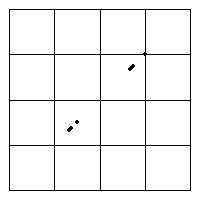
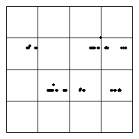

| Logistic |
| 0.9, 0.99 |
| 1.5, 1.5 |
| 2.4, 2.9 |
| 3.1, 3.5 |
| 3.55, 3.57 |
| 3.6, 3.7 |
| 3.8, 3.825 |
| 3.826, 3.827 |
| 3.828, 3.829 |
| 3.846, 3.999 |
| Tent |
| 1.2, 1.32 |
| 1.4, 1.5 |
| 1.7, 1.8 |
| 1.9, 1.999 |
|
|  |
 |
s = 1.2. Here the iterates of the tent map hop between two ranges of
values, yet within these ranges the map is chaotic. The driven IFS strcture is
dominated by the alternate hopping between these two bands, the lower in bin 1, the higher in bin 4. |
s = 1.32. Still two bands, but they are wider and have points lying in bins 2 and 3, as well as
1 and 4. |
|